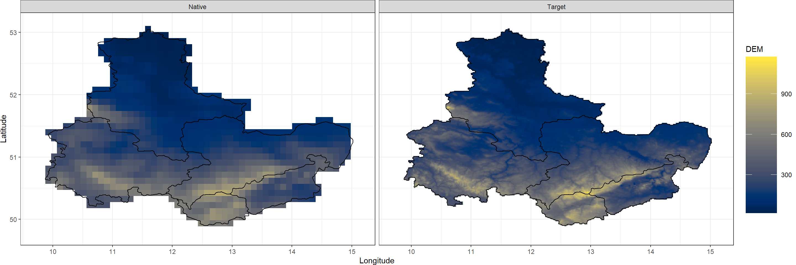
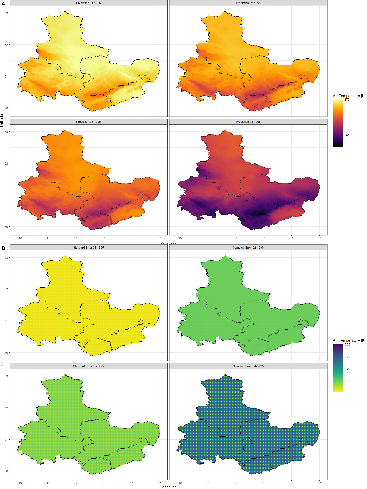
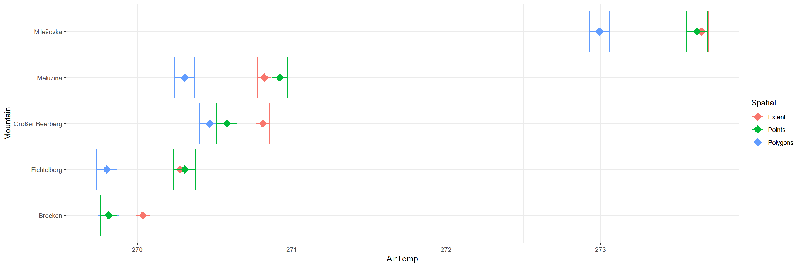
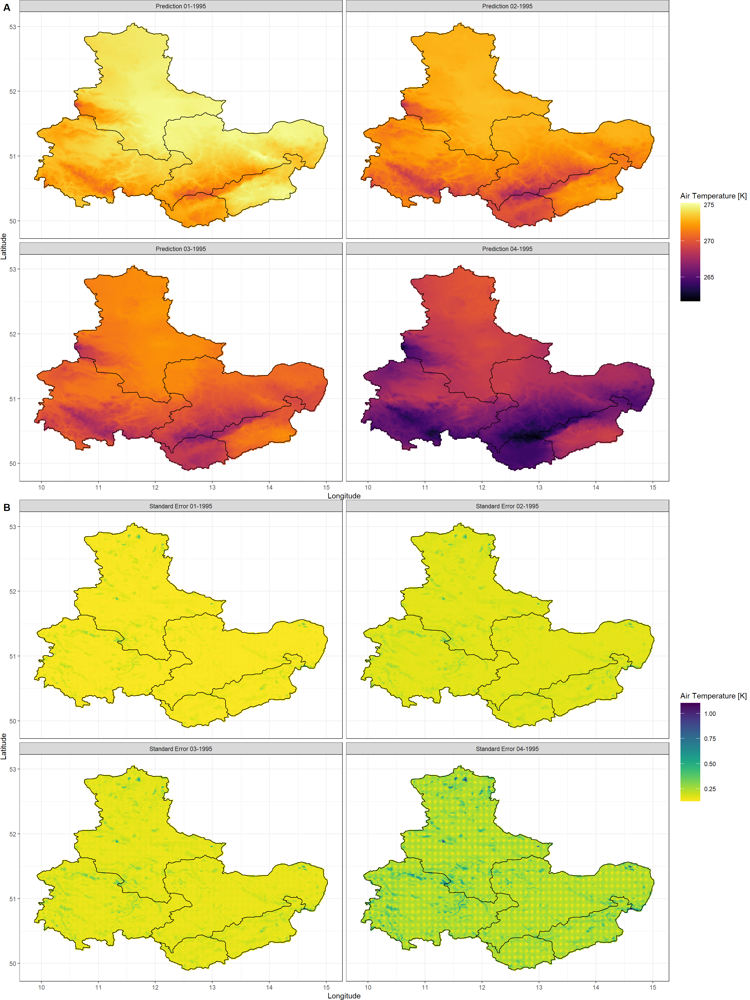
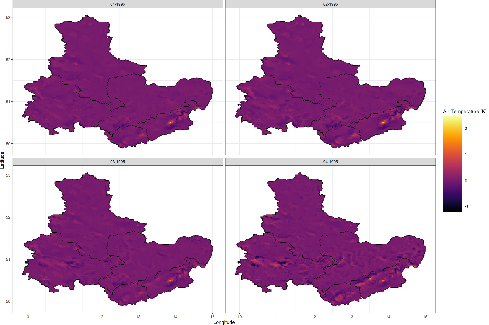
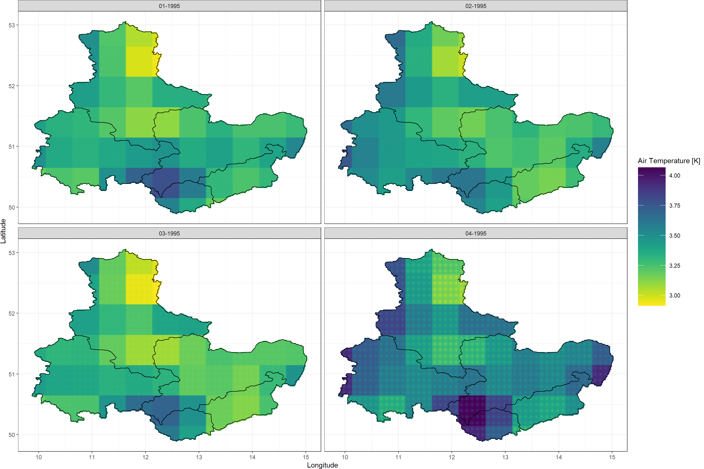

Statistical Downscaling
KrigR is currently undergoing development. As a result, this part of the workshop has become deprecated. Please refer to the setup quick guide portions of this material as these are up-to-date.
First, we load KrigR:
library(KrigR)
KrigR is handled via the krigR() function and requires a set of spatial covariates.
SpatialPolygons spatial preference.
First, we load the data we wish to statistically downscale. We established these data here.
SpatialPolygonsRaw <- stack(file.path(Dir.Data, "SpatialPolygonsRaw.nc"))
We are now ready to begin our journey to high-spatial resolution data products!
Covariates
First, we use the download_DEM() function which comes with KrigR to obtain elevation data as our covariate of choice. This produces two rasters:
- A raster of training resolution which matches the input data in all attributes except for the data in each cell.
- A raster of target resolution which matches the input data as closely as possible in all attributes except for the resolution (which is specified by the user).
Both of these products are bundled into a list where the first element corresponds to the training resolution and the second element contains the target resolution covariate data. Here, we specify a target resolution of .02.
This is how we specify download_DEM() to prepare DEM covariates for us:
Covs_ls <- download_DEM(Train_ras = SpatialPolygonsRaw, # the data we want to downscale
Target_res = .02, # the resolution we want to downscale to
Shape = Shape_shp, # extra spatial preferences
Dir = Dir.Covariates # where to store the covariate files
)
For now, let’s simply inspect our list of covariate rasters:
Covs_ls
## [[1]]
## class : RasterLayer
## dimensions : 34, 54, 1836 (nrow, ncol, ncell)
## resolution : 0.1000189, 0.09999998 (x, y)
## extent : 9.726991, 15.12801, 49.75, 53.15 (xmin, xmax, ymin, ymax)
## crs : +proj=longlat +datum=WGS84 +no_defs
## source : memory
## names : DEM
## values : 20.11554, 861.7248 (min, max)
##
##
## [[2]]
## class : RasterLayer
## dimensions : 204, 324, 66096 (nrow, ncol, ncell)
## resolution : 0.01666667, 0.01666667 (x, y)
## extent : 9.72486, 15.12486, 49.74986, 53.14986 (xmin, xmax, ymin, ymax)
## crs : +proj=longlat +datum=WGS84 +no_defs
## source : memory
## names : DEM
## values : 15.75, 1128 (min, max)
You will find that the target resolution covariate data comes at a resolution of 0.017 instead of the 0.02 resolution we specified. This happens because download_DEM() calls upon the raster::aggregate() function when aggregating the high-resolution covariate data to your desired target resolution and is thus only capable of creating target-resolution covariates in multiples of the base resolution of the GMTED 2010 DEM we are using as our default covariate. This happens only when the Target_res argument is specified to be a number.
Target_res argument as a number will lead to best approximation of the desired resolution due to usage of the raster::aggregate() within download_DEM(). If you need an exact resolution to match pre-existing data, please refer to this part of the workshop.
Notice that despite the covariate rasters (and input rasters, for that matter) containing 1836 and 6.6096\times 10^{4} for training and target resolution respectively, we only obtain data for 826 and 26247 cells respectively due to our specification of SpatialPolygons. This will come in handy when doing the statistical interpolation (see
this section for details).
Before moving on, let’s visualise the covariate data:
Plot_Covs(Covs_ls, Shape_shp)

Notice just how much more clearly the mountainous areas in our study region show up at our target resolution.
Considerations for download_DEM()
Target_res
Alternatively to specifying a target resolution, you can specify a different raster which should be matched in all attributes by the raster at target resolution. We get to this again when discussing third-party data usage.
Target_res can be used for a numeric input or to match a pre-existing raster object.
Shape
Spatial preferences with download_DEM() are specified slightly differently when compared to download_ERA(). Whereas download_ERA() uses the Extent argument, download_DEM() uses the Shape argument. The reason? download_DEM() automatically reads out the extent of the input raster and carries out extent limitation according to this. SpatialPolygons and data.frame inputs are supported. For clarity, we simply recognise them with the Shape argument to avoid confusion and unnecessary extent inputs.
download_DEM() using the Shape argument.
Keep_Temporary
By default, this argument is set to FALSE and raw, global DEM data will be deleted when the covariates you queried have been established. Setting this argument to TRUE will retain the raw data and make it so you do not have to re-download the DEM data for later use.
Keep_Temporary = TRUE will retain global DEM data on your hard drive.
Source
This argument specifies where to download the DEM data from. By default, we query the data from the official USGS website. However, this website has given some users issues with connection instabilities. Consequently, the raw DEM data is also available from a dropbox which you can query download from by setting Source = "Drive".
Source = "Drive" to obtain covariate data.
Kriging
The expense of kriging is largely determined by three factors:
- Change in spatial resolution.
- Number of cells containing data; i.e. Spatial Limitation.
- Localisation of Kriging; i.e. Localisation of Results.
Finally, we are ready to interpolate our input data given our covariates with the krigR() function:
SpatialPolygonsKrig <- krigR(Data = SpatialPolygonsRaw, # data we want to krig as a raster object
Covariates_coarse = Covs_ls[[1]], # training covariate as a raster object
Covariates_fine = Covs_ls[[2]], # target covariate as a raster object
Keep_Temporary = FALSE, # we don't want to retain the individually kriged layers on our hard-drive
Cores = 1, # we want to krig on just one core
FileName = "SpatialPolygonsKrig", # the file name for our full kriging output
Dir = Dir.Exports # which directory to save our final input in
)
## Commencing Kriging
## Kriging of remaining 3 data layers should finish around: 2023-04-03 16:35:08
##
|
| | 0%
|
|==================== | 25%
|
|======================================== | 50%
|
|============================================================ | 75%
|
|================================================================================| 100%
Just like with the download_ERA() function, krigR() updates you on what it is currently working on. Again, I implemented this to make sure people don’t get too anxious staring at an empty console in R. If this feature is not appealing to you, you can turn this progress tracking off by setting verbose = FALSE in the function call to krigR().
krigR() via other means so that when you execute, you get progress tracking.
There we go. As output of the krigR() function, we obtain a list of downscaled data as the first element and downscaling standard errors as the second list element. Let’s look at that:
SpatialPolygonsKrig[-3] # we will talk later about the third element
## $Kriging_Output
## class : RasterBrick
## dimensions : 175, 309, 54075, 4 (nrow, ncol, ncell, nlayers)
## resolution : 0.01666667, 0.01666667 (x, y)
## extent : 9.87486, 15.02486, 50.14986, 53.06653 (xmin, xmax, ymin, ymax)
## crs : +proj=longlat +datum=WGS84 +no_defs
## source : memory
## names : var1.pred.1, var1.pred.2, var1.pred.3, var1.pred.4
## min values : 269.3269, 266.6584, 265.8426, 261.2555
## max values : 275.0150, 273.3421, 272.1410, 270.0713
##
##
## $Kriging_SE
## class : RasterBrick
## dimensions : 175, 309, 54075, 4 (nrow, ncol, ncell, nlayers)
## resolution : 0.01666667, 0.01666667 (x, y)
## extent : 9.87486, 15.02486, 50.14986, 53.06653 (xmin, xmax, ymin, ymax)
## crs : +proj=longlat +datum=WGS84 +no_defs
## source : memory
## names : var1.stdev.1, var1.stdev.2, var1.stdev.3, var1.stdev.4
## min values : 0.1184605, 0.1265206, 0.1142046, 0.1283697
## max values : 0.1308865, 0.1426154, 0.1535409, 0.2638671
All the data has been downscaled and we do have uncertainties recorded for all of our outputs. Let’s visualise the data:
Plot_Krigs(SpatialPolygonsKrig,
Shp = Shape_shp,
Dates = c("01-1995", "02-1995", "03-1995", "04-1995")
)

As you can see, the elevation patterns show up clearly in our kriged air temperature output. Furthermore, you can see that our certainty of Kriging predictions drops on the 04/01/1995 in comparison to the preceding days. However, do keep in mind that a maximum standard error of 0.131, 0.143, 0.154, 0.264 (for each layer of our output respectively) on a total range of data of 5.688, 6.684, 6.298, 8.816 (again, for each layer in the output respectively) is evident of a downscaling result we can be confident in. We also demonstrated reliability of kriging in this publication (Figure 3).
Finally, this SpatialPolygons-informed downscaling took roughly 57 minutes on my machine (this may vary drastically on other devices).
Spatial Limitation
To demonstrate how spatial limitation affects computational time, we downscale all of our remaining
target data (i.e., extent and data.frame time-series specifications).
Click here for kriging calls
extent Data
Point-Data (data.frame)
PtsRaw <- stack(file.path(Dir.Data, "PointsRaw.nc"))
Covs_ls <- download_DEM(Train_ras = PtsRaw,
Target_res = .02,
Shape = Mountains_df,
Buffer = 0.5,
ID = "Mountain",
Dir = Dir.Covariates,
Keep_Temporary = TRUE)
PtsKrig <- krigR(Data = PtsRaw,
Covariates_coarse = Covs_ls[[1]],
Covariates_fine = Covs_ls[[2]],
Keep_Temporary = FALSE,
Cores = 1,
FileName = "PointsKrig",
Dir = Dir.Exports
)
How long did the kriging for each data set take? Let me list these out to highlight just how much of a difference the spatial limitation makes here:
extentspecification (7344 data cells in training resolution) - roughly 30 minutesSpatialPolygonsspecification (3752 data cells in training resolution) - roughly 4 minutes- Point (
data.frame) specification (1908 data cells in training resolution) - roughly 30 seconds
As you can see, there is a huge benefit to reducing the cells containing data to speed up computation. But what is the impact of doing so for our points of interest?
Click here for data extraction and plotting
Extract_df <- data.frame(
AirTemp = c(
raster::extract(
x = SpatialPolygonsKrig[[1]][[1]],
y = Mountains_df[, c("Lon", "Lat")]),
raster::extract(
x = ExtKrig[[1]][[1]],
y = Mountains_df[, c("Lon", "Lat")]),
raster::extract(
x = PtsKrig[[1]][[1]],
y = Mountains_df[, c("Lon", "Lat")])
),
Uncertainty = c(
raster::extract(
x = SpatialPolygonsKrig[[2]][[1]],
y = Mountains_df[, c("Lon", "Lat")]),
raster::extract(
x = ExtKrig[[2]][[1]],
y = Mountains_df[, c("Lon", "Lat")]),
raster::extract(
x = PtsKrig[[2]][[1]],
y = Mountains_df[, c("Lon", "Lat")])
),
Mountain = rep(Mountains_df$Mountain, 3),
Spatial = rep(c("Polygons", "Extent", "Points"),
each = nrow(Mountains_df))
)
ggplot(data = Extract_df, aes(y = Mountain, x = AirTemp, col = Spatial)) +
geom_point(cex = 5, pch = 18) +
geom_errorbar(aes(xmin = AirTemp - Uncertainty/2,
xmax = AirTemp + Uncertainty/2)) +
theme_bw()

As you can see, the differences between the different data sets at our points of interest are noticeable and often times not negligible (as far as statistical interpolation uncertainty, i.e., error bars) are concerned.
When statistically downscaling data products it is vital you inspect the output data for inconsistencies or other issues.
Kriging is not a one-size-fits all solution to spatial resolution needs!
Localisation of Results
krigR() function uses all cells in a spatial product to downscale individual cells of rasters.
nmax argument can circumvent this.
Let’s build further on our above example by adding the nmax argument (passed on to gstat::krige()) to our krigR() function call. This argument controls how many of the closest cells the Kriging algorithm should consider in the downscaling of individual coarse, training cells.
First, we need to re-establish our covariate data:
Covs_ls <- download_DEM(Train_ras = SpatialPolygonsRaw,
Target_res = .02,
Shape = Shape_shp,
Dir = Dir.Covariates,
Keep_Temporary = TRUE)
Now we may use locally weighted kriging:
SpatialPolygonsLocalKrig <- krigR(Data = SpatialPolygonsRaw,
Covariates_coarse = Covs_ls[[1]],
Covariates_fine = Covs_ls[[2]],
Keep_Temporary = FALSE,
Cores = 1,
nmax = 10,
FileName = "SpatialPolygonsLocalKrig",
Dir = Dir.Exports
)
Plot_Krigs(SpatialPolygonsLocalKrig,
Shp = Shape_shp,
Dates = c("01-1995", "02-1995", "03-1995", "04-1995")
)

The air temperature prediction/downscaling results look just like the ones that we obtained above (we will investigate this claim in a second here). However, we seriously improved our localised understanding of Kriging uncertainties (i.e., we see much more localised patterns of Kriging standard error). In the case of our study region, uncertainties seem to be highest for areas where the landscape is dominated by large, abrupt changes in elevation (e.g. around the mountainous areas) and water-dominated areas such as streams and lakes (e.g. the lakes around Leipzig in the North of Saxony).
nmax argument helps to identify highly localised patterns in the Kriging uncertainty as well as predictions!
Now let’s investigate how much of a difference there is between our two predictions of statistically downscaled air temperature when using locally weighted kriging or domain-average kriging as before:
Plot_Raw(SpatialPolygonsLocalKrig[[1]]-SpatialPolygonsKrig[[1]],
Shp = Shape_shp,
Dates = c("01-1995", "02-1995", "03-1995", "04-1995"))

Again, limiting the number of data points that the Kriging algorithm has access to changes the data we obtain. Therefore, let me reiterate:
When statistically downscaling data products it is vital you inspect the output data for inconsistencies or other issues.
Kriging is not a one-size-fits all solution to spatial resolution needs!
Considerations for krigR()
krigR() is a complex function with many things happening under the hood. To make sure you have the best experience with this function, I have compiled a few bits of good-to-know information about the workings of krigR().
Cores
Kriging is computationally expensive and can be a time-consuming exercise first and foremost. However, the gstat::krige() function which krigR() makes calls to, and which carries out the kriging itself, does not support multi-core processing. Conclusively, we can hand separate kriging jobs to separate cores in our machines and drastically reduce computation time. We do so via the Cores argument.
Cores argument, krigR() carries out parallel kriging of multi-layer rasters.
nmax and maxdist
Localised kriging is achieved through either nmax or maxdist.
nmax or maxdist, we recommend you ensure that the distance represented by these arguments approximates the area of typical weather system (around 150km).
For the purpose of showing clear patterns in the localisation of uncertainty patterns, we did not to so in the above.
Keep_Temporary
Kriging is time-consuming. Particularly for multi-layer rasters with many layers. To make it so you can interrupt kriging of multi-layer rasters and resume the process at a later time, we have implemented temporary file saving. krigR() checks for presence of temporary files and only loads already kriged layers rather than kriging them again. Upon completion and saving of the final output, you may choose to delete the temporary files or keep them.
KrigingEquation
krigR() can accommodate any covariate pair (training and target resolution) you supply. However, when using
third-party covariates in non-linear combinations, you will need to use the KrigingEquation argument to do so.
KrigingEquation argument, you may specify non-linear combinations of covariates for your call to krigR().
Kriging Reliability
Kriging reliability and robustness is largely dependant on the statistical link between your target variable and covariates of your choice.
We demonstrate that Kriging is a reliable interpolation method when carefully choosing covariates in
this publication (Figure 3). One large factor in reliability of kriging is the change in resolution between training and target resolutions - as a rule of thumb, we do not recommend downscaling representing more than roughly one order of magnitude. If you attempt to do so krigR() will throw a warning message, but proceed regardless.
Call List
So far, we have only ever looked at the first two elements in the list returned by krigR(). A quick look at the help file, the code, or this guide reveals that there is a third list element - the call list. When coding this feature into krigR() I intended for this to be a neat, clean, storage-friendly way of keeping track of how the spatial product was created. It does so without storing additional spatial products. Let’s have a look at it:
Click here for call list query and output
SpatialPolygonsKrig[[3]]
## $Data
## $Data$Class
## [1] "RasterStack"
## attr(,"package")
## [1] "raster"
##
## $Data$Dimensions
## $Data$Dimensions$nrow
## [1] 34
##
## $Data$Dimensions$ncol
## [1] 54
##
## $Data$Dimensions$ncell
## [1] 1836
##
##
## $Data$Extent
## class : Extent
## xmin : 9.726991
## xmax : 15.12801
## ymin : 49.75
## ymax : 53.15
##
## $Data$CRS
## Coordinate Reference System:
## Deprecated Proj.4 representation: +proj=longlat +datum=WGS84 +no_defs
## WKT2 2019 representation:
## GEOGCRS["unknown",
## DATUM["World Geodetic System 1984",
## ELLIPSOID["WGS 84",6378137,298.257223563,
## LENGTHUNIT["metre",1]],
## ID["EPSG",6326]],
## PRIMEM["Greenwich",0,
## ANGLEUNIT["degree",0.0174532925199433],
## ID["EPSG",8901]],
## CS[ellipsoidal,2],
## AXIS["longitude",east,
## ORDER[1],
## ANGLEUNIT["degree",0.0174532925199433,
## ID["EPSG",9122]]],
## AXIS["latitude",north,
## ORDER[2],
## ANGLEUNIT["degree",0.0174532925199433,
## ID["EPSG",9122]]]]
##
## $Data$layers
## [1] "X1" "X2" "X3" "X4"
##
##
## $Covariates_coarse
## $Covariates_coarse$Class
## [1] "RasterLayer"
## attr(,"package")
## [1] "raster"
##
## $Covariates_coarse$Dimensions
## $Covariates_coarse$Dimensions$nrow
## [1] 34
##
## $Covariates_coarse$Dimensions$ncol
## [1] 54
##
## $Covariates_coarse$Dimensions$ncell
## [1] 1836
##
##
## $Covariates_coarse$Extent
## class : Extent
## xmin : 9.726991
## xmax : 15.12801
## ymin : 49.75
## ymax : 53.15
##
## $Covariates_coarse$CRS
## Coordinate Reference System:
## Deprecated Proj.4 representation: +proj=longlat +datum=WGS84 +no_defs
## WKT2 2019 representation:
## GEOGCRS["unknown",
## DATUM["World Geodetic System 1984",
## ELLIPSOID["WGS 84",6378137,298.257223563,
## LENGTHUNIT["metre",1]],
## ID["EPSG",6326]],
## PRIMEM["Greenwich",0,
## ANGLEUNIT["degree",0.0174532925199433],
## ID["EPSG",8901]],
## CS[ellipsoidal,2],
## AXIS["longitude",east,
## ORDER[1],
## ANGLEUNIT["degree",0.0174532925199433,
## ID["EPSG",9122]]],
## AXIS["latitude",north,
## ORDER[2],
## ANGLEUNIT["degree",0.0174532925199433,
## ID["EPSG",9122]]]]
##
## $Covariates_coarse$layers
## [1] "DEM"
##
##
## $Covariates_fine
## $Covariates_fine$Class
## [1] "RasterLayer"
## attr(,"package")
## [1] "raster"
##
## $Covariates_fine$Dimensions
## $Covariates_fine$Dimensions$nrow
## [1] 204
##
## $Covariates_fine$Dimensions$ncol
## [1] 324
##
## $Covariates_fine$Dimensions$ncell
## [1] 66096
##
##
## $Covariates_fine$Extent
## class : Extent
## xmin : 9.72486
## xmax : 15.12486
## ymin : 49.74986
## ymax : 53.14986
##
## $Covariates_fine$CRS
## Coordinate Reference System:
## Deprecated Proj.4 representation: +proj=longlat +datum=WGS84 +no_defs
## WKT2 2019 representation:
## GEOGCRS["unknown",
## DATUM["World Geodetic System 1984",
## ELLIPSOID["WGS 84",6378137,298.257223563,
## LENGTHUNIT["metre",1]],
## ID["EPSG",6326]],
## PRIMEM["Greenwich",0,
## ANGLEUNIT["degree",0.0174532925199433],
## ID["EPSG",8901]],
## CS[ellipsoidal,2],
## AXIS["longitude",east,
## ORDER[1],
## ANGLEUNIT["degree",0.0174532925199433,
## ID["EPSG",9122]]],
## AXIS["latitude",north,
## ORDER[2],
## ANGLEUNIT["degree",0.0174532925199433,
## ID["EPSG",9122]]]]
##
## $Covariates_fine$layers
## [1] "DEM"
##
##
## $KrigingEquation
## ERA ~ DEM
## <environment: 0x7fee0d4450e8>
##
## $Cores
## [1] 1
##
## $FileName
## [1] "SpatialPolygonsKrig"
##
## $Keep_Temporary
## [1] FALSE
##
## $nmax
## [1] Inf
##
## $Data_Retrieval
## [1] "None needed. Data was not queried via krigR function, but supplied by user."
This lengthy list should contain all information you need to trace how you created a certain data set using krigR(). If you feel like anything is missing in this list, please contact us.
Aggregate Uncertainty
KrigR workflow, it is trivial to obtain uncertainty flags for all of your data - no matter the spatial or temporal resolution.
To understand the full certainty of our data obtained via the KrigR workflow, we should combine
dynamical uncertainty with the statistical uncertainty we obtained from the krigR() function call above.
To do so, we require two data sets:
SpatialPoylgonsKrig- created above containing statistical uncertainty in the second list positionSpatialPoylgonsEns- created here; download here containing dynamical uncertainty
First, we load the data and assign them to objects with shorter names:
SpatialPolygonsEns <- stack(file.path(Dir.Data, "SpatialPolygonsEns.nc"))
DynUnc <- SpatialPolygonsEns
KrigUnc <- SpatialPolygonsKrig[[2]]
Next, we need to align the rasters of statistical uncertainty (resolution: 0.017) and dynamical uncertainty (resolution: 0.5). As you can see, these are of differing resolutions and so cannot easily be combined using raster math. Instead, we first disaggregate the coarser-resolution raster (DynUnc) as disaggregation does not attempt any interpolation thus preserving the data, but representing it with smaller cells. To fix final remaining alignment issues, we allow for some resampling between the two raster:
EnsDisagg <- disaggregate(DynUnc, fact=res(DynUnc)[1]/res(KrigUnc)[1])
DynUnc <- resample(EnsDisagg, KrigUnc)
Finally, we combine the two uncertainty data products to form an aggregate uncertainty product:
FullUnc <- DynUnc + KrigUnc
Now, we are ready to plot our aggregate uncertainty:
Plot_Raw(FullUnc,
Shp = Shape_shp,
Dates = c("01-1995", "02-1995", "03-1995", "04-1995"),
COL = rev(viridis(100)))

As you can see, at short time-scales dynamic uncertainty eclipses statistical uncertainty. However, this phenomenon reverses at longer time-scales as shown in this publication (Figure 1).
Session Info
sessionInfo()
## R version 4.2.3 (2023-03-15)
## Platform: x86_64-apple-darwin17.0 (64-bit)
## Running under: macOS Big Sur ... 10.16
##
## Matrix products: default
## BLAS: /Library/Frameworks/R.framework/Versions/4.2/Resources/lib/libRblas.0.dylib
## LAPACK: /Library/Frameworks/R.framework/Versions/4.2/Resources/lib/libRlapack.dylib
##
## locale:
## [1] en_US.UTF-8/en_US.UTF-8/en_US.UTF-8/C/en_US.UTF-8/en_US.UTF-8
##
## attached base packages:
## [1] parallel stats graphics grDevices utils datasets methods base
##
## other attached packages:
## [1] mapview_2.11.0 rnaturalearthdata_0.1.0 rnaturalearth_0.3.2
## [4] gimms_1.2.1 ggmap_3.0.2 cowplot_1.1.1
## [7] viridis_0.6.2 viridisLite_0.4.1 ggplot2_3.4.1
## [10] tidyr_1.3.0 KrigR_0.1.2 terra_1.7-21
## [13] httr_1.4.5 stars_0.6-0 abind_1.4-5
## [16] fasterize_1.0.4 sf_1.0-12 lubridate_1.9.2
## [19] automap_1.1-9 doSNOW_1.0.20 snow_0.4-4
## [22] doParallel_1.0.17 iterators_1.0.14 foreach_1.5.2
## [25] rgdal_1.6-5 raster_3.6-20 sp_1.6-0
## [28] stringr_1.5.0 keyring_1.3.1 ecmwfr_1.5.0
## [31] ncdf4_1.21
##
## loaded via a namespace (and not attached):
## [1] leafem_0.2.0 colorspace_2.1-0 class_7.3-21
## [4] leaflet_2.1.2 satellite_1.0.4 base64enc_0.1-3
## [7] rstudioapi_0.14 proxy_0.4-27 farver_2.1.1
## [10] fansi_1.0.4 codetools_0.2-19 cachem_1.0.7
## [13] knitr_1.42 jsonlite_1.8.4 png_0.1-8
## [16] Kendall_2.2.1 compiler_4.2.3 assertthat_0.2.1
## [19] fastmap_1.1.1 cli_3.6.0 htmltools_0.5.4
## [22] tools_4.2.3 gtable_0.3.1 glue_1.6.2
## [25] dplyr_1.1.0 Rcpp_1.0.10 jquerylib_0.1.4
## [28] vctrs_0.6.1 blogdown_1.16 crosstalk_1.2.0
## [31] lwgeom_0.2-11 xfun_0.37 timechange_0.2.0
## [34] lifecycle_1.0.3 rnaturalearthhires_0.2.1 zoo_1.8-11
## [37] scales_1.2.1 gstat_2.1-0 yaml_2.3.7
## [40] curl_5.0.0 memoise_2.0.1 gridExtra_2.3
## [43] sass_0.4.5 reshape_0.8.9 stringi_1.7.12
## [46] highr_0.10 e1071_1.7-13 boot_1.3-28.1
## [49] intervals_0.15.3 RgoogleMaps_1.4.5.3 rlang_1.1.0
## [52] pkgconfig_2.0.3 bitops_1.0-7 evaluate_0.20
## [55] lattice_0.20-45 purrr_1.0.1 htmlwidgets_1.6.1
## [58] labeling_0.4.2 tidyselect_1.2.0 plyr_1.8.8
## [61] magrittr_2.0.3 bookdown_0.33 R6_2.5.1
## [64] generics_0.1.3 DBI_1.1.3 pillar_1.8.1
## [67] withr_2.5.0 units_0.8-1 xts_0.13.0
## [70] tibble_3.2.1 spacetime_1.2-8 KernSmooth_2.23-20
## [73] utf8_1.2.3 rmarkdown_2.20 jpeg_0.1-10
## [76] grid_4.2.3 zyp_0.11-1 FNN_1.1.3.2
## [79] digest_0.6.31 classInt_0.4-9 webshot_0.5.4
## [82] stats4_4.2.3 munsell_0.5.0 bslib_0.4.2